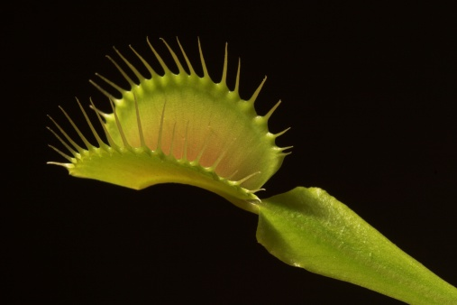
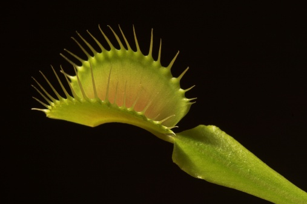

Il existe 2 types de piège pour les plantes carnivores:
-les pièges actifs qui possèdent un mouvement de fermeture ou d'enroulement autour de la proie
-les pièges passifs qui restent statiques.
Les pièges à loup de la dionée est constitué d'une machoire qui se ferme lorsque un insecte touche de petits poiles sensibles, le piège se ferme généralement en 1/30 seconde.

Les pièges à glu de la drosera sont constitué de petites goutelettes de glu sur lequelles vont se coller les insectes.
Les piège à urne ont une forme de tube, les insectes attirée par le néctare vont dans le tube et restent coincés à l'intérieur. Il est important de rappeler que le clapet ne se refermera en aucun cas car se piège est passif.